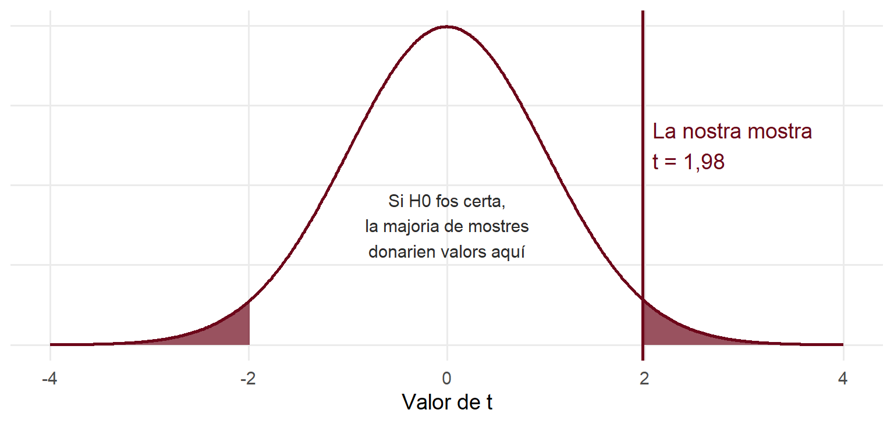
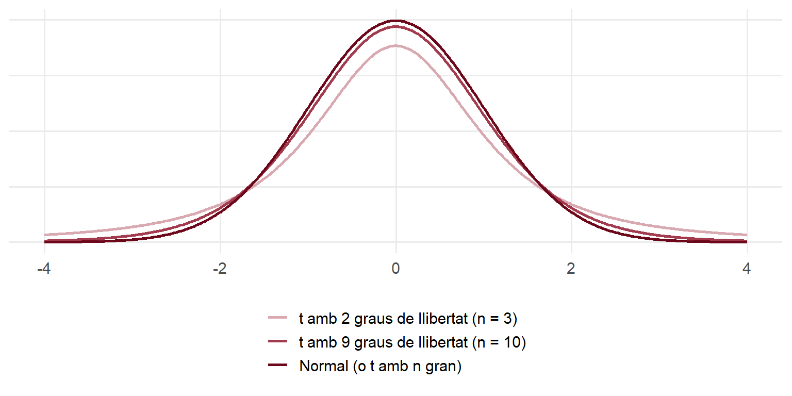

competencies |>
summarise(mitjana = mean(nota_mat),
se = sd(nota_mat) / sqrt(n()),
t = (mitjana - 72) / se)# A tibble: 1 × 3
mitjana se t
<dbl> <dbl> <dbl>
1 73.6 0.800 1.98Sessió 2 · Per aprofundir
A les slides hem fet t.test(competencies$nota_mat, mu = 72) per saber si la nota mitjana de matemàtiques és diferent de 72, i hem mirat el p-valor. Aquí obrirem la caixa negra: què calcula R, d’on surt el p-valor i per què es diu t.
Per entendre-ho bé, us anirà bé haver llegit abans les explicacions sobre la distribució normal i la distribució de mostreig. El codi R de cada gràfic és plegat: cliqueu a Code per veure’l.
Volem saber si la nota mitjana de matemàtiques de tots els alumnes de 6è de Catalunya és diferent de 72 punts. Plantegem dues hipòtesis:
A la nostra mostra de 480 alumnes, la mitjana és de 73,58 punts. És més de 72, sí. Però podria ser per atzar? Ja sabem que cada mostra dona una mitjana una mica diferent. La pregunta real és: si la mitjana de tot Catalunya fos 72, seria estrany treure una mostra amb una mitjana de 73,58?
La diferència és de 1,58 punts. Però «1,6 punts» és molt o poc? Depèn de quant varien les mitjanes d’una mostra a l’altra, és a dir, de l’error estàndard. Per això mesurem la distància en errors estàndard:
\[t = \frac{\text{mitjana de la mostra} - \text{valor de } H_0}{SE} = \frac{\bar{x} - \mu_0}{s / \sqrt{n}}\]
És la mateixa idea que el valor z: quantes «unitats de variació» ens separen del valor de referència. Ho calculem a mà:
# A tibble: 1 × 3
mitjana se t
<dbl> <dbl> <dbl>
1 73.6 0.800 1.98La nostra mitjana és a 1,98 errors estàndard de 72.
Si la mitjana real fos 72, els valors de t de les diferents mostres possibles formarien una campana centrada en 0. La majoria de mostres donarien valors de t entre −2 i 2. El p-valor és la proporció de mostres que donarien un t tan o més extrem que el nostre (per les dues bandes, perquè preguntem «diferent», no «més gran»):
corba <- tibble(t = seq(-4, 4, length.out = 800), densitat = dt(t, df = gl))
ggplot(corba, aes(x = t, y = densitat)) +
geom_area(data = filter(corba, t >= abs(t_obs)), fill = bordeus, alpha = 0.7) +
geom_area(data = filter(corba, t <= -abs(t_obs)), fill = bordeus, alpha = 0.7) +
geom_line(color = bordeus, linewidth = 1) +
geom_vline(xintercept = t_obs, color = bordeus, linewidth = 1) +
annotate("text", x = t_obs + 0.1, y = 0.25, hjust = 0, color = bordeus,
label = paste0("La nostra mostra\nt = ", num(t_obs, 2))) +
annotate("text", x = 0, y = 0.15, label = "Si H0 fos certa,\nla majoria de mostres\ndonarien valors aquí",
size = 4, color = gris_fosc) +
labs(x = "Valor de t", y = NULL) +
theme(axis.text.y = element_blank())
L’àrea fosca (les dues cues) és el p-valor. Amb R:
Si la mitjana real fos 72, només un 4,9 % de les mostres donarien una mitjana tan allunyada com la nostra. Com que és menys del 5 % (el nostre llindar, \(\alpha = 0{,}05\)), concloem que és massa estrany per ser atzar: rebutgem \(H_0\).
t.test()
One Sample t-test
data: competencies$nota_mat
t = 1.9778, df = 479, p-value = 0.04853
alternative hypothesis: true mean is not equal to 72
95 percent confidence interval:
72.01028 75.15347
sample estimates:
mean of x
73.58187 Surten exactament els mateixos números: t = 1.9778, df = 479 (els graus de llibertat, \(n - 1\)) i p-value = 0.04853. Això és tot el que fa t.test().
Si coneguéssim la desviació típica de tota la població, la distribució seria exactament una normal i parlaríem de valor z. Però no la coneixem: l’estimem amb la de la mostra, i això afegeix una mica més d’incertesa. Per compensar-ho, fem servir la distribució t de Student, que és com una normal però amb les cues més gruixudes: els valors extrems són una mica més probables.
Quanta més gruixuda? Depèn de la mida de la mostra, a través dels graus de llibertat (\(n - 1\)):
x <- seq(-4, 4, length.out = 500)
distribucions <- bind_rows(
tibble(x = x, densitat = dt(x, df = 2), distribucio = "t amb 2 graus de llibertat (n = 3)"),
tibble(x = x, densitat = dt(x, df = 9), distribucio = "t amb 9 graus de llibertat (n = 10)"),
tibble(x = x, densitat = dnorm(x), distribucio = "Normal (o t amb n gran)")
) |>
mutate(distribucio = factor(distribucio, levels = unique(distribucio)))
ggplot(distribucions, aes(x = x, y = densitat, color = distribucio)) +
geom_line(linewidth = 1) +
scale_color_manual(values = c(bordeus_clar, "#A23B4D", bordeus)) +
labs(x = NULL, y = NULL, color = NULL) +
theme(axis.text.y = element_blank(), legend.position = "bottom", legend.direction = "vertical")
Amb mostres petites, la t té les cues molt més altes que la normal. A partir d’unes 30 observacions, les dues són gairebé iguals. Amb els nostres 480 alumnes, la diferència és inapreciable: per això a les slides l’interval amb 1,96 (normal) i el de t.test() (t) donaven pràcticament el mateix.
Imaginem que mesurem l’alçada de 20 persones treballadores d’un departament. La mitjana és de 174 cm i la desviació típica, de 7 cm. És diferent de la mitjana de la població, 172 cm?
[1] 1.277753[1] 0.2167283La diferència és de 2 cm, més que a l’exemple de matemàtiques. Però amb només 20 persones l’error estàndard és gran, i el t és petit: el p-valor és d’un 22 %. No podem rebutjar \(H_0\): una diferència de 2 cm en una mostra de 20 persones pot ser perfectament per atzar.
«No rebutjar \(H_0\)» no vol dir que la mitjana sigui 172. Vol dir que, amb aquestes dades, no tenim prou evidència per dir que és diferent. Amb una mostra més gran, potser sí que la trobaríem.
Fins ara hem preguntat si la mitjana és diferent de 72 (contrast bilateral: mirem les dues cues). Si la pregunta és només si és més gran, mirem una sola cua, amb l’argument alternative:
El p-valor és la meitat, perquè només comptem una cua. Per a «més petit que», faríem servir alternative = "less". El tipus de contrast s’ha de decidir abans de mirar les dades, segons la pregunta que ens fem.
t.test() fa tots aquests càlculs d’una vegada. Per defecte, el contrast és bilateral; amb alternative = "greater" o "less", unilateral.Anterior: El teorema del límit central · Següent: Què vol dir «95 % de confiança»?
---
title: "Què fa per dins t.test()?"
subtitle: "Sessió 2 · Per aprofundir"
code-fold: true
code-tools: true
execute:
warning: false
message: false
---
```{r}
#| label: setup
#| include: false
library(tidyverse)
bordeus <- "#6D071A"
bordeus_clar <- "#D8A9B1"
gris_fosc <- "#2B2B2B"
theme_set(theme_minimal(base_size = 14) + theme(panel.grid.minor = element_blank()))
num <- function(x, d = 1) format(round(x, d), nsmall = d, decimal.mark = ",", big.mark = ".")
competencies <- read_csv2("../dades/competencies.csv", show_col_types = FALSE)
```
::: {.callout-note}
## De què va aquest document?
A les slides hem fet `t.test(competencies$nota_mat, mu = 72)` per saber si la nota mitjana de matemàtiques és diferent de 72, i hem mirat el **p-valor**. Aquí obrirem la caixa negra: què calcula R, d'on surt el p-valor i per què es diu *t*.
Per entendre-ho bé, us anirà bé haver llegit abans les explicacions sobre la [distribució normal](01_normal_valor_z.qmd) i la [distribució de mostreig](02_distribucio_mostreig_alcada.qmd). El codi R de cada gràfic és plegat: cliqueu a **Code** per veure'l.
:::
## La pregunta
Volem saber si la nota mitjana de matemàtiques de **tots** els alumnes de 6è de Catalunya és diferent de **72 punts**. Plantegem dues hipòtesis:
- $H_0$ (hipòtesi nul·la): la mitjana és 72.
- $H_1$ (hipòtesi alternativa): la mitjana **no** és 72.
A la nostra mostra de 480 alumnes, la mitjana és de `r num(mean(competencies$nota_mat), 2)` punts. És més de 72, sí. Però **podria ser per atzar?** Ja sabem que cada mostra dona una mitjana una mica diferent. La pregunta real és: si la mitjana de tot Catalunya fos 72, seria estrany treure una mostra amb una mitjana de `r num(mean(competencies$nota_mat), 2)`?
## Pas 1. A quina distància estem de 72? (l'estadístic *t*)
La diferència és de `r num(mean(competencies$nota_mat) - 72, 2)` punts. Però «1,6 punts» és molt o poc? Depèn de quant varien les mitjanes d'una mostra a l'altra, és a dir, de l'**error estàndard**. Per això mesurem la distància **en errors estàndard**:
$$t = \frac{\text{mitjana de la mostra} - \text{valor de } H_0}{SE} = \frac{\bar{x} - \mu_0}{s / \sqrt{n}}$$
És la mateixa idea que el [valor z](01_normal_valor_z.qmd): quantes «unitats de variació» ens separen del valor de referència. Ho calculem a mà:
```{r}
#| code-fold: false
competencies |>
summarise(mitjana = mean(nota_mat),
se = sd(nota_mat) / sqrt(n()),
t = (mitjana - 72) / se)
```
```{r}
#| include: false
mitjana <- mean(competencies$nota_mat)
se <- sd(competencies$nota_mat) / sqrt(nrow(competencies))
t_obs <- (mitjana - 72) / se
gl <- nrow(competencies) - 1
p_obs <- 2 * (1 - pt(abs(t_obs), df = gl))
```
La nostra mitjana és a `r num(t_obs, 2)` errors estàndard de 72.
## Pas 2. Com d'estrany seria això si $H_0$ fos certa? (el p-valor)
Si la mitjana real fos 72, els valors de *t* de les diferents mostres possibles formarien una campana centrada en 0. La majoria de mostres donarien valors de *t* entre −2 i 2. El **p-valor** és la proporció de mostres que donarien un *t* **tan o més extrem** que el nostre (per les dues bandes, perquè preguntem «diferent», no «més gran»):
```{r}
#| fig-width: 8
#| fig-height: 3.8
corba <- tibble(t = seq(-4, 4, length.out = 800), densitat = dt(t, df = gl))
ggplot(corba, aes(x = t, y = densitat)) +
geom_area(data = filter(corba, t >= abs(t_obs)), fill = bordeus, alpha = 0.7) +
geom_area(data = filter(corba, t <= -abs(t_obs)), fill = bordeus, alpha = 0.7) +
geom_line(color = bordeus, linewidth = 1) +
geom_vline(xintercept = t_obs, color = bordeus, linewidth = 1) +
annotate("text", x = t_obs + 0.1, y = 0.25, hjust = 0, color = bordeus,
label = paste0("La nostra mostra\nt = ", num(t_obs, 2))) +
annotate("text", x = 0, y = 0.15, label = "Si H0 fos certa,\nla majoria de mostres\ndonarien valors aquí",
size = 4, color = gris_fosc) +
labs(x = "Valor de t", y = NULL) +
theme(axis.text.y = element_blank())
```
L'àrea fosca (les dues cues) és el p-valor. Amb R:
```{r}
#| code-fold: false
2 * (1 - pt(1.9778, df = 479))
```
Si la mitjana real fos 72, només un `r num(p_obs * 100)` % de les mostres donarien una mitjana tan allunyada com la nostra. Com que és menys del 5 % (el nostre llindar, $\alpha = 0{,}05$), concloem que és **massa estrany per ser atzar**: rebutgem $H_0$.
## Pas 3. Comprovem-ho amb `t.test()`
```{r}
#| code-fold: false
t.test(competencies$nota_mat, mu = 72)
```
Surten exactament els mateixos números: `t = 1.9778`, `df = 479` (els graus de llibertat, $n - 1$) i `p-value = 0.04853`. Això és tot el que fa `t.test()`.
## Per què es diu *t* i no *z*?
Si coneguéssim la desviació típica de **tota la població**, la distribució seria exactament una normal i parlaríem de valor *z*. Però no la coneixem: l'estimem amb la de la mostra, i això afegeix una mica més d'incertesa. Per compensar-ho, fem servir la **distribució *t* de Student**, que és com una normal però amb les **cues més gruixudes**: els valors extrems són una mica més probables.
Quanta més gruixuda? Depèn de la mida de la mostra, a través dels **graus de llibertat** ($n - 1$):
```{r}
#| fig-width: 8
#| fig-height: 4
x <- seq(-4, 4, length.out = 500)
distribucions <- bind_rows(
tibble(x = x, densitat = dt(x, df = 2), distribucio = "t amb 2 graus de llibertat (n = 3)"),
tibble(x = x, densitat = dt(x, df = 9), distribucio = "t amb 9 graus de llibertat (n = 10)"),
tibble(x = x, densitat = dnorm(x), distribucio = "Normal (o t amb n gran)")
) |>
mutate(distribucio = factor(distribucio, levels = unique(distribucio)))
ggplot(distribucions, aes(x = x, y = densitat, color = distribucio)) +
geom_line(linewidth = 1) +
scale_color_manual(values = c(bordeus_clar, "#A23B4D", bordeus)) +
labs(x = NULL, y = NULL, color = NULL) +
theme(axis.text.y = element_blank(), legend.position = "bottom", legend.direction = "vertical")
```
Amb mostres petites, la *t* té les cues molt més altes que la normal. A partir d'unes 30 observacions, les dues són gairebé iguals. Amb els nostres 480 alumnes, la diferència és inapreciable: per això a les slides l'interval amb 1,96 (normal) i el de `t.test()` (*t*) donaven pràcticament el mateix.
## I amb una mostra petita?
Imaginem que mesurem l'alçada de **20 persones** treballadores d'un departament. La mitjana és de 174 cm i la desviació típica, de 7 cm. És diferent de la mitjana de la població, 172 cm?
```{r}
#| code-fold: false
t_petita <- (174 - 172) / (7 / sqrt(20))
t_petita
2 * (1 - pt(t_petita, df = 19)) # p-valor
```
La diferència és de 2 cm, més que a l'exemple de matemàtiques. Però amb només 20 persones l'error estàndard és gran, i el *t* és petit: el p-valor és d'un `r num(2 * (1 - pt(t_petita, df = 19)) * 100, 0)` %. **No podem rebutjar $H_0$**: una diferència de 2 cm en una mostra de 20 persones pot ser perfectament per atzar.
::: {.callout-important}
## Compte amb la interpretació
«No rebutjar $H_0$» **no vol dir** que la mitjana sigui 172. Vol dir que, amb aquestes dades, **no tenim prou evidència** per dir que és diferent. Amb una mostra més gran, potser sí que la trobaríem.
:::
## Contrastos unilaterals: «més gran que» o «més petit que»
Fins ara hem preguntat si la mitjana és **diferent** de 72 (contrast bilateral: mirem les dues cues). Si la pregunta és només si és **més gran**, mirem una sola cua, amb l'argument `alternative`:
```{r}
#| code-fold: false
t.test(competencies$nota_mat, mu = 72, alternative = "greater")$p.value
```
El p-valor és la meitat, perquè només comptem una cua. Per a «més petit que», faríem servir `alternative = "less"`. El tipus de contrast s'ha de decidir **abans** de mirar les dades, segons la pregunta que ens fem.
::: {.callout-tip}
## Idees clau
- L'estadístic ***t*** mesura a quants **errors estàndard** està la mitjana de la mostra del valor de $H_0$.
- El **p-valor** és la proporció de mostres que donarien un resultat tan o més extrem que el nostre **si $H_0$ fos certa**.
- Fem servir la distribució ***t*** perquè estimem la desviació típica amb la mostra. Amb mostres grans, és pràcticament igual que la normal.
- Amb mostres petites, l'error estàndard és gran i costa més rebutjar $H_0$.
- `t.test()` fa tots aquests càlculs d'una vegada. Per defecte, el contrast és bilateral; amb `alternative = "greater"` o `"less"`, unilateral.
:::
**Anterior**: [El teorema del límit central](03_distribucio_mostreig_renda.qmd) · **Següent**: [Què vol dir «95 % de confiança»?](05_simulacio_intervals_confianca.qmd)